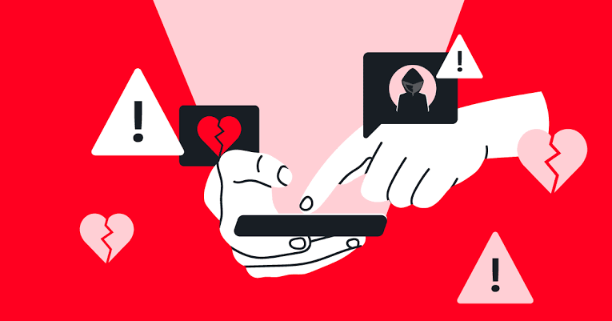

Romance Scam
O Romance Scam (golpe do romance) é um golpe onde criminosos fingem ser parceiros românticos para enganar vítimas e roubar dinheiro ou informações pessoais. Com o aumento dos relacionamentos online, esse tipo de fraude tem se tornado cada vez mais comum.
O que é Romance Scam?
Romance Scam é um golpe aplicado em sites de namoro, redes sociais e aplicativos de mensagens. O criminoso cria um perfil falso e estabelece uma relação emocional com a vítima para ganhar sua confiança e, eventualmente, pedir dinheiro ou informações sensíveis.
Exemplo: Um golpista se passa por um militar no exterior, conquista a vítima e depois inventa uma emergência financeira para pedir dinheiro.
Pergunta 1:
O que é o Romance Scam?
Principais Sinais de Romance Scam
-
Declarações de Amor Muito Rápidas
Golpistas tentam acelerar o relacionamento e declaram amor rapidamente.
- Desconfie de quem se apaixona rápido demais sem conhecê-lo pessoalmente.
- Evite compartilhar informações pessoais cedo demais.
-
Evita Chamadas de Vídeo ou Encontros Pessoais
Os criminosos sempre encontram desculpas para não fazer videochamadas ou marcar encontros.
- Peça para fazer uma chamada de vídeo antes de confiar na pessoa.
- Se a pessoa se recusar repetidamente, desconfie.
-
Diz Trabalhar em Lugares Remotos
Muitos golpistas afirmam ser militares, médicos ou trabalhadores em plataformas de petróleo para justificar a distância.
- Pesquise a foto e as informações do perfil para verificar sua veracidade.
-
Pede Dinheiro com Desculpas Urgentes
Depois de ganhar a confiança da vítima, o golpista pede dinheiro para emergências.
- Nunca envie dinheiro para alguém que você nunca encontrou pessoalmente.
-
Tenta Manipular e Criar Culpa
Golpistas tentam manipular emocionalmente a vítima, dizendo que precisam desesperadamente de ajuda financeira.
- Não se sinta culpado por negar dinheiro ou informações pessoais.
Pergunta 2:
Qual desses é um sinal comum de um Romance Scam?
Como se Proteger do Romance Scam?
- Pesquise a identidade da pessoa online.
- ] Não envie dinheiro nem compartilhe dados pessoais.
- Evite pressa no relacionamento.
- Desconfie de desculpas para evitar videochamadas.
- Fale com amigos ou familiares sobre o relacionamento.
- Denuncie perfis suspeitos nas plataformas.
Pergunta 3:
Como você pode se proteger de um Romance Scam?
O Que Fazer se Você Cair em um Golpe?
- Pare de se comunicar imediatamente e denuncie o golpista.
- Não envie mais dinheiro.
- Denuncie o golpe às autoridades.
- Informe a plataforma onde ocorreu o golpe.
- Altere suas senhas se necessário.
- Fale com alguém de confiança.
Pergunta 4:
Se você cair em um Romance Scam, o que deve fazer?
- Continuar ajudando com mais dinheiro
Conclusão
Os golpes de romance são cada vez mais sofisticados, mas você pode se proteger mantendo-se alerta e não compartilhando informações ou dinheiro com estranhos na internet. Se algo parecer suspeito, confie no seu instinto e pesquise antes de se envolver.